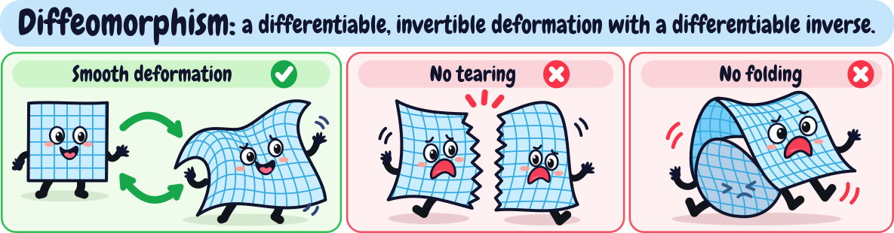
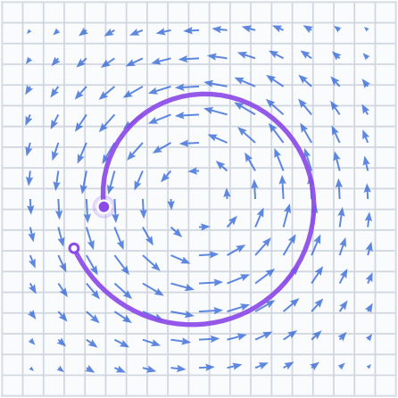
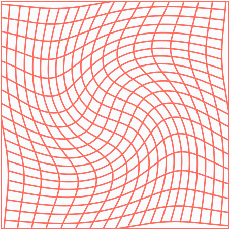
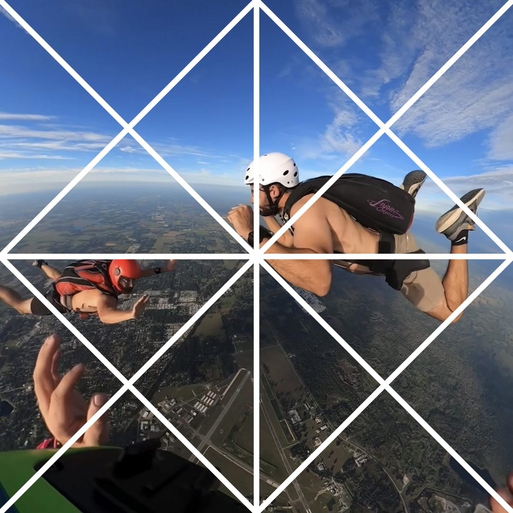
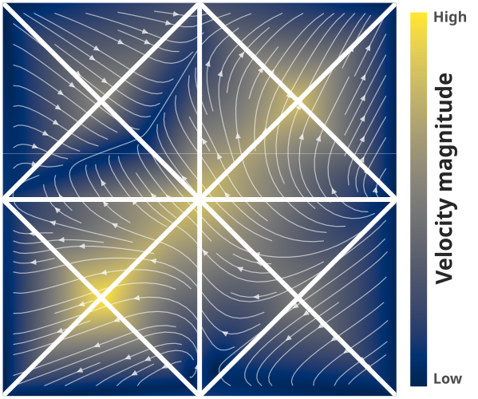
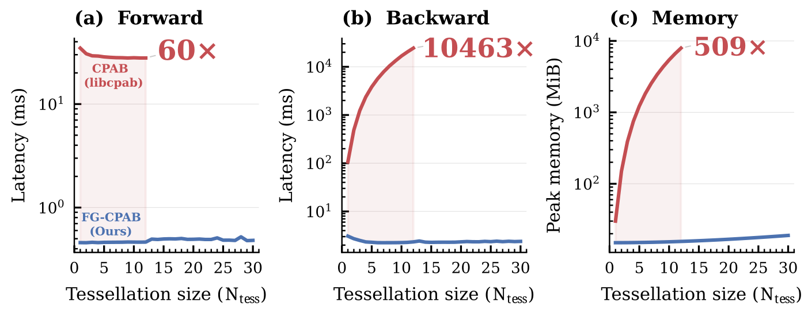

Abstract
Diffeomorphisms provide a flexible, topology-preserving mathematical tool for modeling complex spatial deformations, and are used in various scientific fields. However, making these deformations simultaneously highly expressive and computationally efficient remains challenging. Continuous Piecewise-Affine Based (CPAB) transformations offer an attractive solution by parameterizing a family of diffeomorphisms via continuous velocity fields that are piecewise affine w.r.t. a chosen tessellation of the domain. Importantly, d = \dim(\theta), the dimension of the parameter vector \theta, depends on the fineness of the tessellation rather than on the data resolution. Despite this compact parameterization, CPAB optimization has long been hindered by the tight coupling between trajectory integration and computing gradients w.r.t. \theta. We introduce FG-CPAB, a factorized-gradient formulation for scalable CPAB transformations. By separating integration from parameter-space projection, our method reduces gradient computation complexity from \mathcal{O}(dTN) to \mathcal{O}(TN + dC), where T is the number of integration steps, N is the number of transformed points, and C is the number of tessellation cells. This reformulation yields speedups of up to four orders of magnitude (e.g., \approx 10^4\times in 2D), substantial memory savings (e.g., \approx 500\times reduction in peak GPU memory usage in 2D), and dramatically higher expressivity. This makes, for the first time, fine-tessellation CPAB practical in 2D and 3D, enabling highly expressive parametric diffeomorphisms.
Live demo: deform an image with a CPAB diffeomorphism
A CPAB diffeomorphism running live in your browser. Drag to add velocity to the tessellation vertices; every frame integrates the continuous piecewise-affine velocity field for each pixel on your GPU. The map stays smooth and invertible however hard you pull: move t below 0 to apply the exact inverse.
What are diffeomorphisms, and why are they useful?

A diffeomorphism is a differentiable invertible deformation with a differentiable inverse. Diffeomorphisms are highly expressive, bending and stretching space into rich, complex shapes, and yet well behaved: they never tear or fold it, so neighbours stay neighbours and nothing overlaps. That combination is rare, and it is exactly what registration, shape matching and geometric warping need, where a tear or a fold would produce invalid correspondences.
Diffeomorphisms as flows
A convenient way to build a diffeomorphism is to pick a well-behaved velocity field \mathbf v and let every point flow along it for unit time. Under certain conditions, the resulting transformation is a diffeomorphism, and flowing along -\mathbf v inverts the deformation.
\dot{\mathbf p}^{(t)} = \mathbf v\big(\mathbf p^{(t)}\big), \qquad t \in [0, 1]


CPAB: continuous piecewise-affine velocity fields
Flow-based methods often store the velocity on a dense grid, so the number of parameters grows with the data resolution. CPAB transformations, introduced by Freifeld et al., instead tessellate the domain into cells and give each cell c an affine velocity field \mathbf v_c = \mathbf A_c\tilde{\mathbf p}, with \mathbf A_c \in \mathbb R^{2\times 3} and \tilde{\mathbf p} = (p_x, p_y, 1)^\top. The cell fields are tied to agree on shared edges, so the whole field is continuous. That constraint is linear, so every valid field is spanned by a fixed basis \mathbf B and set by a parameter vector \boldsymbol\theta \in \mathbb R^d:
\operatorname{vec}\big(\{\mathbf A_c\}_{c=1}^{C}\big) = \mathbf B\boldsymbol\theta


The size of \boldsymbol\theta depends on how fine the tessellation is, not on the data resolution. Finer tessellations give more expressive deformations, but computing gradients w.r.t. \boldsymbol\theta has made them impractically slow. FG-CPAB removes that bottleneck.
Gradients through the factorization
The standard CPAB gradient carries the sensitivities of all d parameters through all T integration steps of each of the N points, at a cost of \mathcal{O}(dTN), and d grows with every refinement of the tessellation. FG-CPAB factorizes it: integrate every point forward, run one adjoint sweep that accumulates a small moment matrix per triangle, and recover the gradient of all d parameters with a single sparse projection, at a cost of \mathcal{O}(TN + dC):
\begin{gathered} \mathbf{M}_c = \sum_{(n,t)\in\mathcal{I}_c} \Big[h\,\boldsymbol\lambda_n^{(t+1)}\tilde{\mathbf p}_{n,\mathrm{mid}}^{(t)\top} + \tfrac{h^2}{2}\,\big(\mathbf A_{c,\mathrm{lin}}^\top\boldsymbol\lambda_n^{(t+1)}\big)\,\tilde{\mathbf p}_n^{(t)\top}\Big], \\[6pt] \nabla_{\boldsymbol\theta}\mathcal L = \mathbf B^\top \operatorname{vec}\big(\{\mathbf M_c\}_{c=1}^{C}\big). \end{gathered}

The result: up to 10,463× faster gradients and 509× less GPU memory, and tessellations far finer than the standard implementation can handle. The demos below fit CPAB transformations with exactly this gradient, live on your GPU.
Fitting point correspondences
A line grid is warped onto a target swirl by gradient descent on \theta (24×24 tessellation, d = 2{,}210). The inverse comes for free: \phi_\theta^{-1} = \phi_{-\theta}, so negating \theta maps the warped grid back onto the source.
Registering densities
Here the loss compares colors instead of point positions: a source density is warped until it matches a target density.
BibTeX
@inproceedings{aflalo2026fgcpab,
title = {Factorized Gradients for Scalable Highly-expressive Parametric Diffeomorphisms},
author = {Aflalo, Amit and Treister, Eran and Baskin, Chaim and Freifeld, Oren},
booktitle = {Advances in Neural Information Processing Systems},
year = {2026}
}